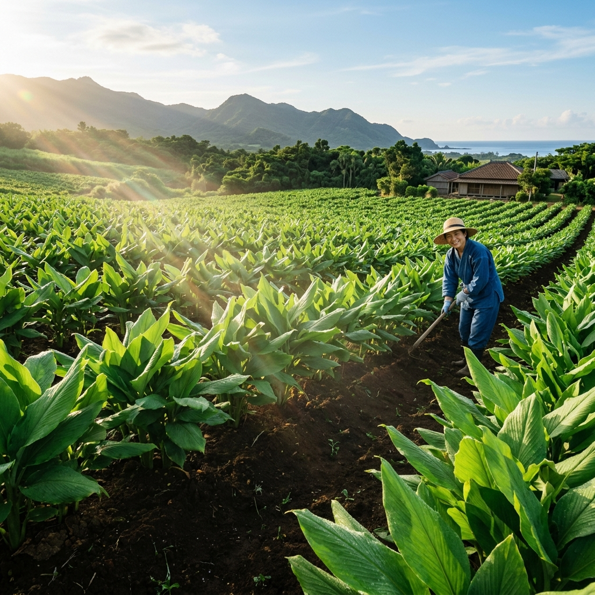
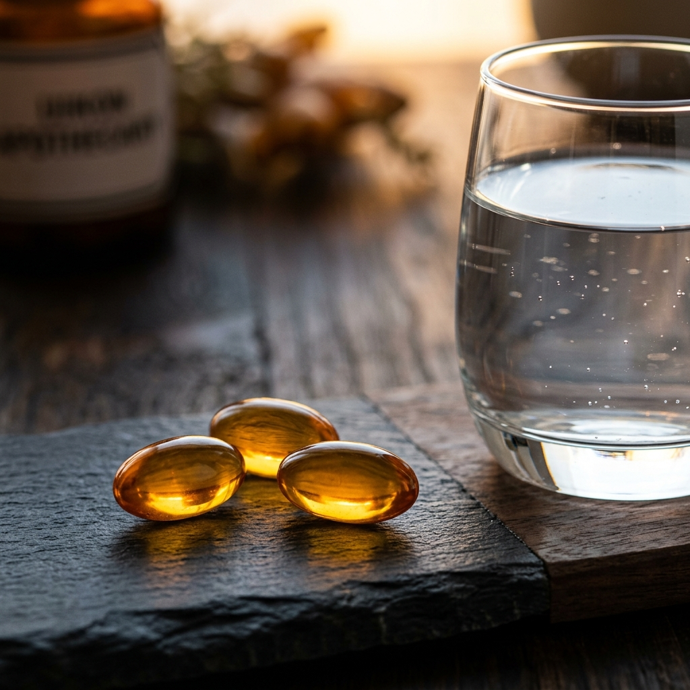

Cultivado sin un solo
Pesticida Químico
Enagic es la única empresa del mundo que produce un suplemento natural utilizando Agua Kangen en todo su ciclo de vida agrícola. Las granjas Ukon están situadas en Okinawa, conocida mundialmente como una de las exclusivas Blue Zones (Zonas Azules) de longevidad del planeta.
- pH 11.5 (Agua Fuerte Kangen): Se utiliza para lavar las raíces de cúrcuma, disolviendo cualquier rastro de aceite o polución ambiental sin químicos.
- pH 2.5 (Agua Fuerte Ácida): Se usa para esterilizar tanto el equipo agrícola como el suelo, previniendo hongos ecológicamente.
- Suelo Enriquecido: Abonado orgánicamente, rico en minerales autóctonos que dotan a esta cúrcuma salvaje de una potencia insuperable.
La Primera Cápsula
100% Viva y Vegetal
La mayoría de suplementos de cúrcuma comerciales vienen en polvo, expuestos al aire y oxidados antes de que lleguen a tu estómago. Enagic ha patentado una cápsula blanda 100% vegetal (sin grasas animales, ni gelatinas bovinas).
Más importante aún: el interior de la cápsula sella al vacío la curcumina suspendida en aceites esenciales y Agua Kangen antioxidante, garantizando que el ingrediente llegue vivo, no-oxidado y altamente biodisponible a tu intestino.

Un Cóctel Ayurvédico Insuperable
Kangen Ukon Sigma no es solo cúrcuma. Es una sinergia biológica de elementos diseñados para desinflamar, proteger el hígado y potenciar la longevidad.
Curcumina Salvaje
Mezcla exclusiva de Ukon de Primavera (rico en aceites esenciales) y Ukon de Otoño (altamente concentrado en curcumina desinflamatoria).
Aceite de Oliva y Perilla
La curcumina es liposoluble. Estos aceites esenciales orgánicos garantizan que tu cuerpo absorba el 100% del compuesto, en lugar de desecharlo.
Tocotrienol
Conocido como la "Súper Vitamina E", un antioxidante extremadamente potente que previene la degradación celular y fomenta el anti-envejecimiento.
Aceite de Semilla de Lino
Aporta ácidos grasos cardiosaludables (Omega-3), favoreciendo la salud circulatoria y actuando en sinergia con el Agua Kangen.